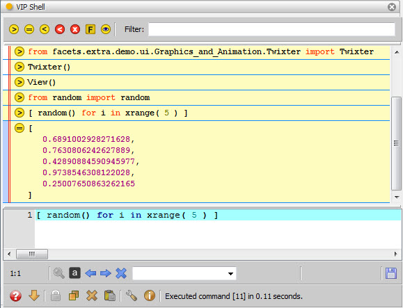

VIPShell
Displays an instance of the standard Facets VIP Shell, a graphical, interactive
Python shell. Refer to the The VIP Shell section for a detailed description
of using the VIP Shell.
Module
facets.extra.tools.vip_shell
Output Connections
- output
- Sends the current value of the shell’s _ variable to other connected tools.
- export
- Sends any history item data exported by the user to other connected tools.
- send
- Sends any history item sent by the user to other connected tools. Note that
send differs from export in that export sends the actual data associated
with a history item, not the history item itself.
- profile
- Sends the name of the most recently generated profiler data file to other
connected tools.
Screenshots
